Service
Note:Non-observance of the following points may lead to control module failure! VAS 5051 or VAS 5052 must always be connected to the approved power supply at the approved voltages. Under no circumstances should the power supply be interrupted or the diagnostic connector unplugged during the flash procedure. Any appliances with high electromagnetic radiation (i.e. mobile phones) must be switched OFF.
^ Ensure the following vehicle requirements are met:
^ Connect vehicle to a powered Volkswagen approved Midtronics/InCharge 940 (INC-940) tester/charger
^ Battery MUST have minimum no-load charge of 12.5 V.
^ Turn off the radio and all other accessories, and when necessary, switch running lights off
^ Turn off any appliances with high electromagnet radiation (i.e. mobile phones)
Coding for address word "17 - Dash Panel insert and "19 - Diagnostic interface for data-bus", Recording Record dash panel insert (instrument cluster) coding as follows:
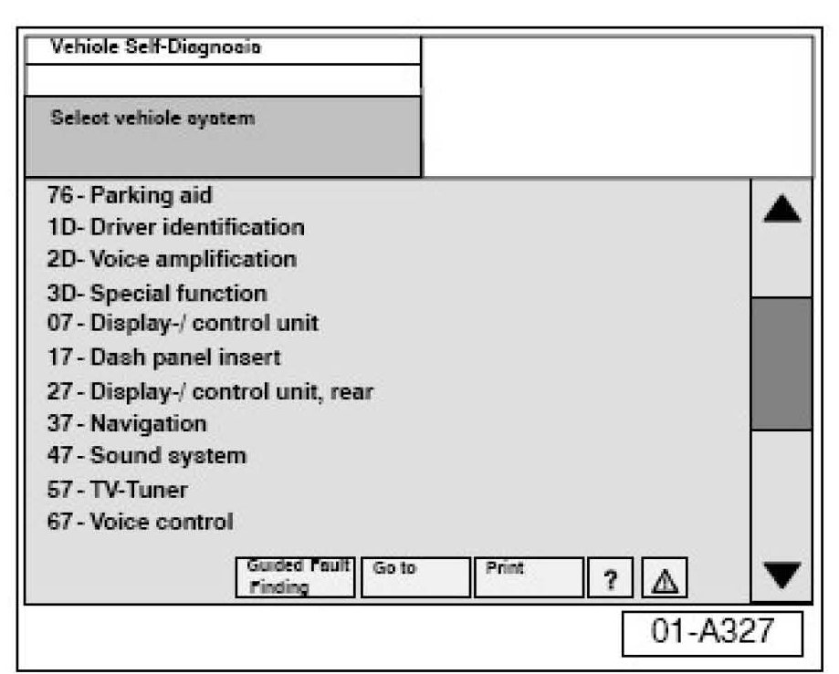
^ Connect VAS 5051/5052 Diagnostic tool.
^ Switch ignition ON.
^ From the Start up screen, select Vehicle Self-Diagnosis. Select address word 17-Dash panel insert".
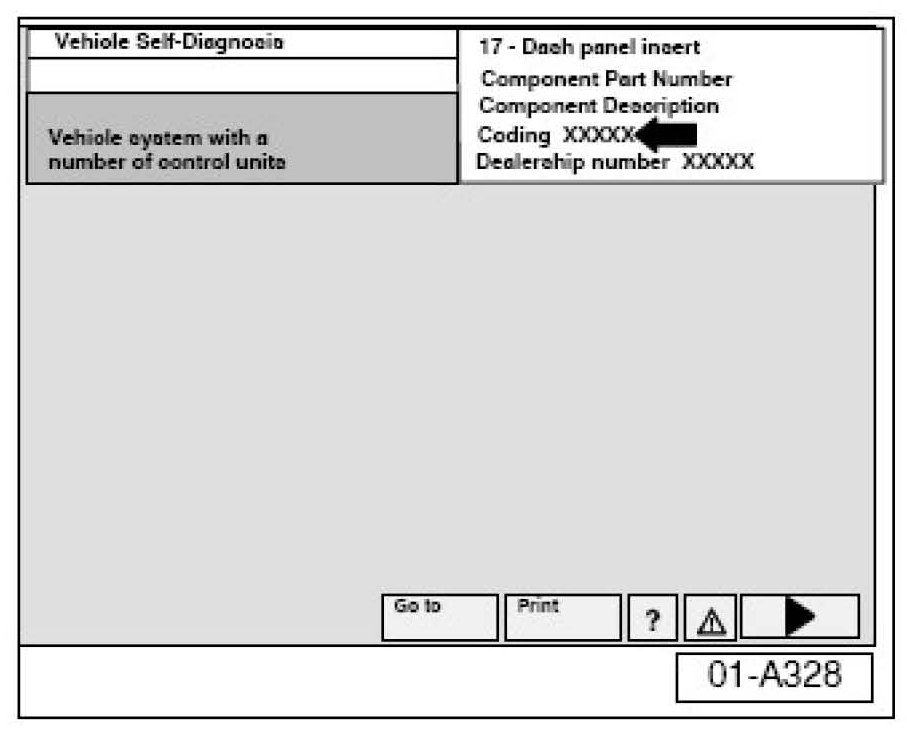
^ Record dash panel insert module coding number.
^ Repeat sequence for address word "19-Diagnostic interface for data-bus".
Procedure
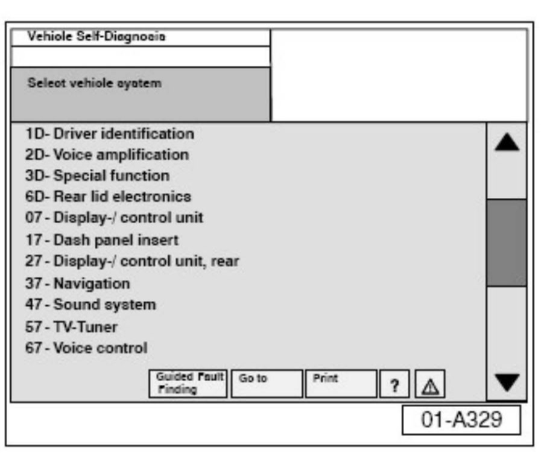
^ Disconnect two electrical connectors for cooling fans -V17- and -V177-, see Repair Manual, Engine Mechanical, 19-Cooling system.
^ Switch ignition ON.
^ Switch VAS 5051/5052 ON and insert Update CD into CD drive as soon as the start screen appears.
^ Select vehicle system "17-Dash panel insert".
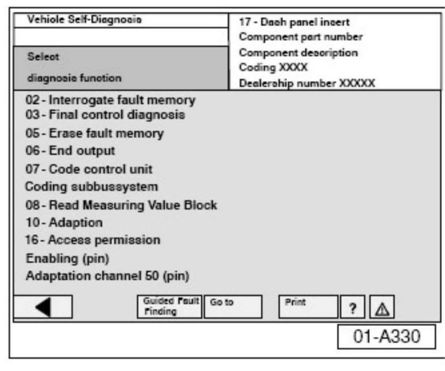
^ Similar screen appears.
^ Select diagnosis function "004-DTC Memory content (use sub function 004.01)".
^ Select backward arrow on navigation bar.
Select diagnosis function "004-DTC Memory content (use sub function 004.10)".
With fault memory erased:
^ Select backward arrow on navigation bar.
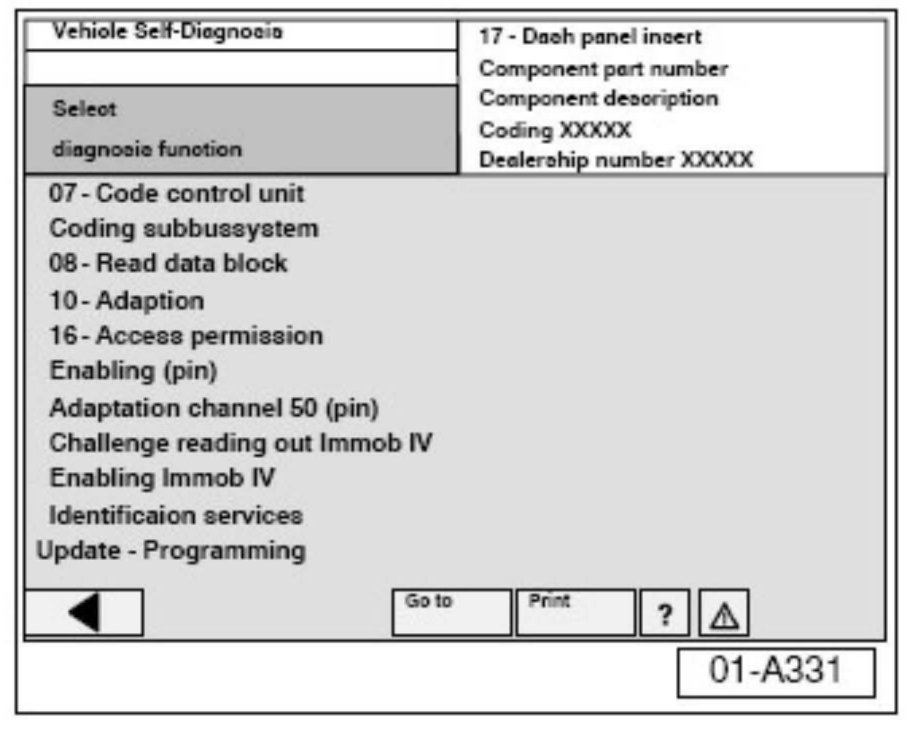
^ Select "Update Programming".
^ Select forward arrow on navigation bar.
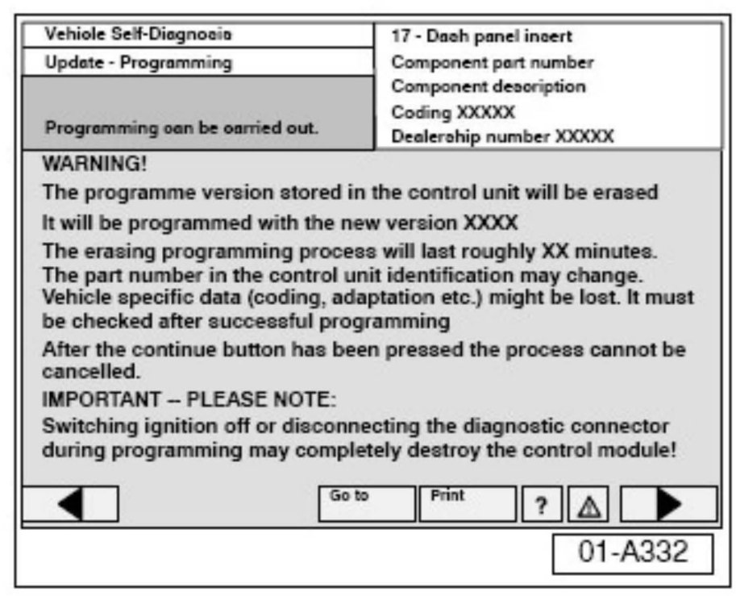
Similar screen appears.
Note:
DO NOT Interrupt or cancel programming procedure.
After first programming cycle is complete the ignition has to be switched OFF and back ON.
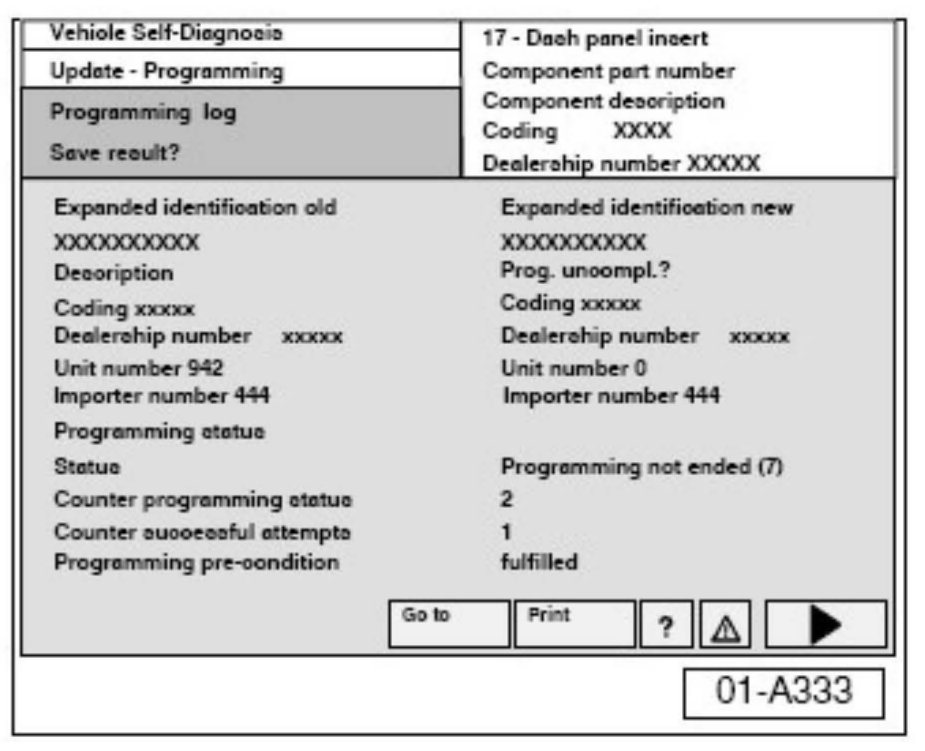
After a successful first programming cycle you should see a similar screen.
^ Select forward arrow on navigation bar.
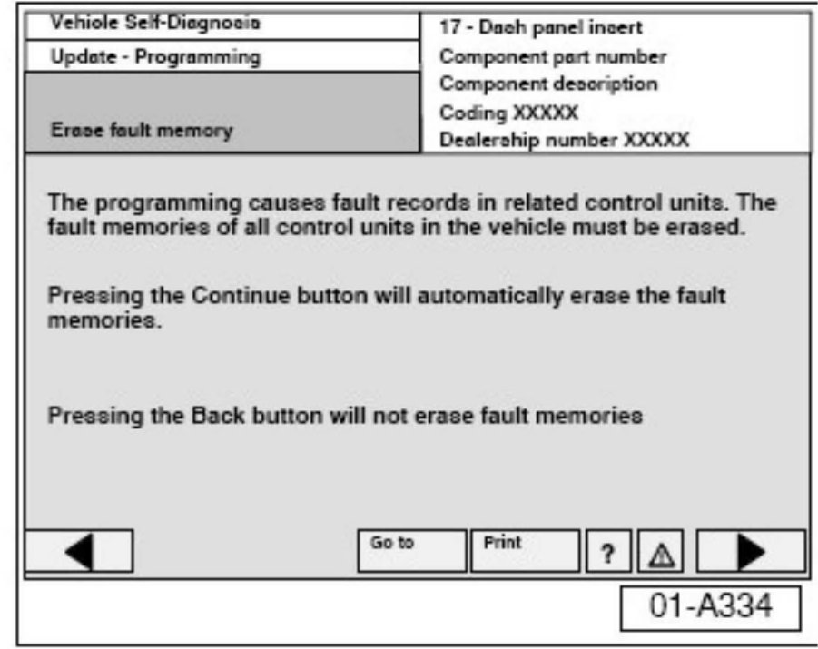
Similar screen appears.
^ Select backward arrow on navigation bar.
Note:
DO NOT erase fault memory! The programming requires two update cycles.
After the first cycle, DO NOT select the forward arrow on navigation bar and DO NOT erase fault codes. The second cycle must be started first.
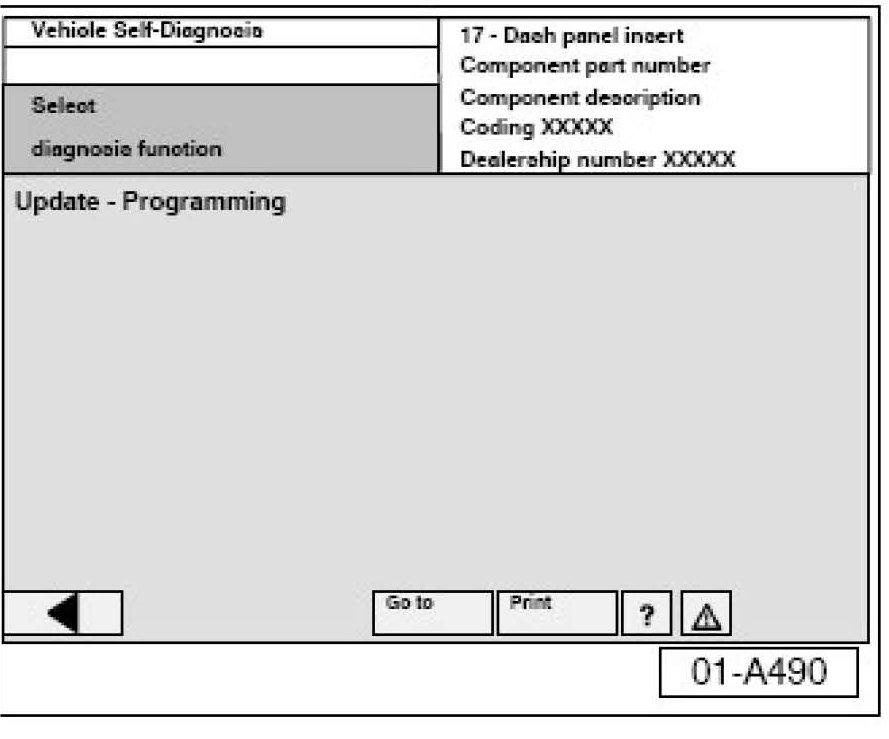
If the second cycle is accidentally skipped, the GND wire of the (comfort battery) has to be disconnected and after 10 minutes reconnected in order to reset the system.
^ Select "Update Programming" to initiate second cycle.
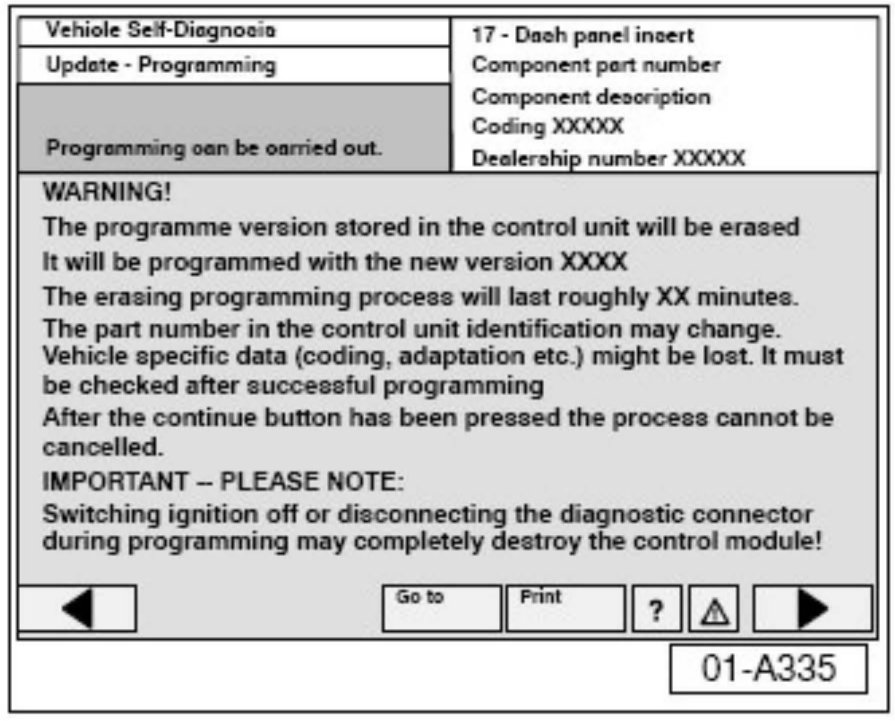
Similar screen appears.
^ Select forward arrow on navigation bar.
Note:
DO NOT interrupt or cancel programming procedure.
After second programming cycle:
^ Switch ignition OFF and back ON.
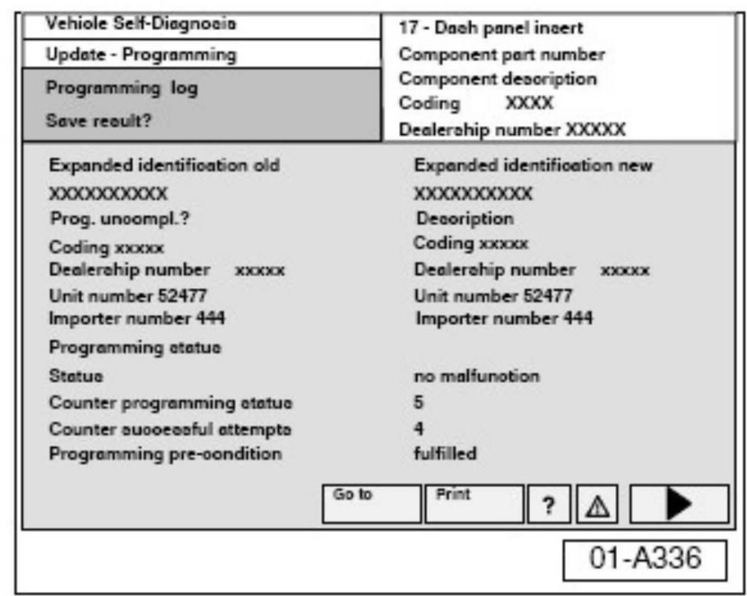
After a successful second programming, a similar screen appears.
^ Select forward arrow on navigation bar.
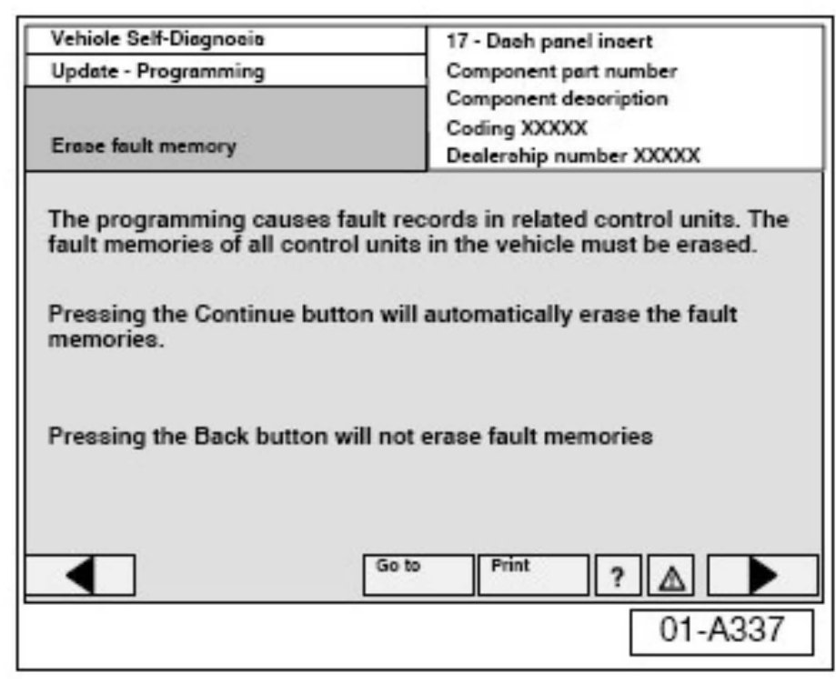
Similar screen appears.
^ Select forward arrow on navigation bar to erase fault codes.
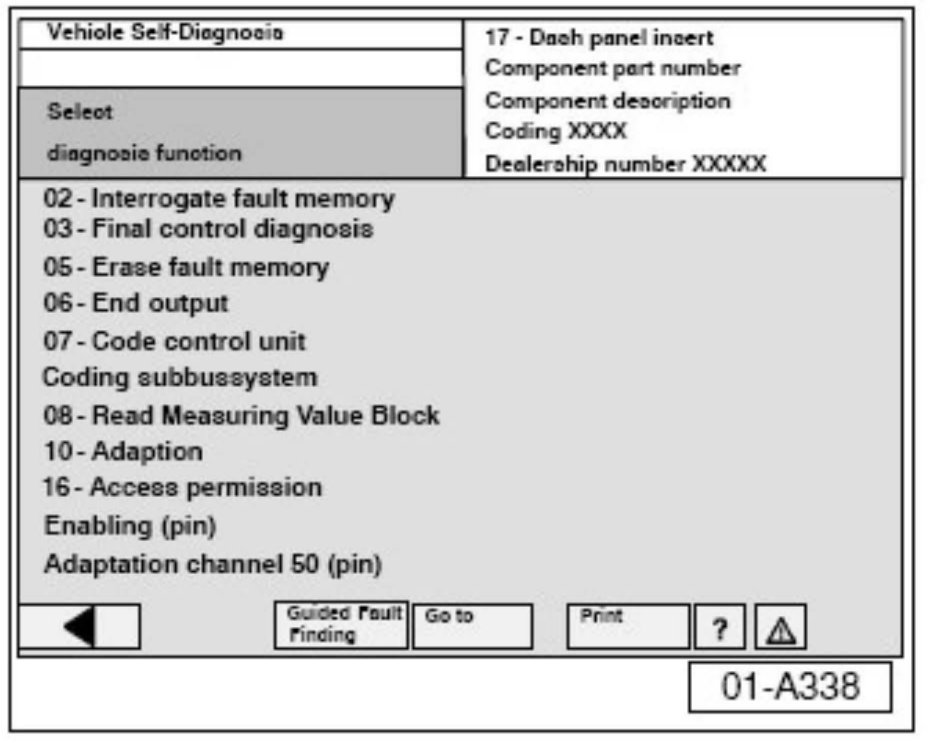
^ Check coding of "17-Dash panel insert" and "19-Diagnostic interface for data-bus" and re-code (using previously recorded coding) if necessary.
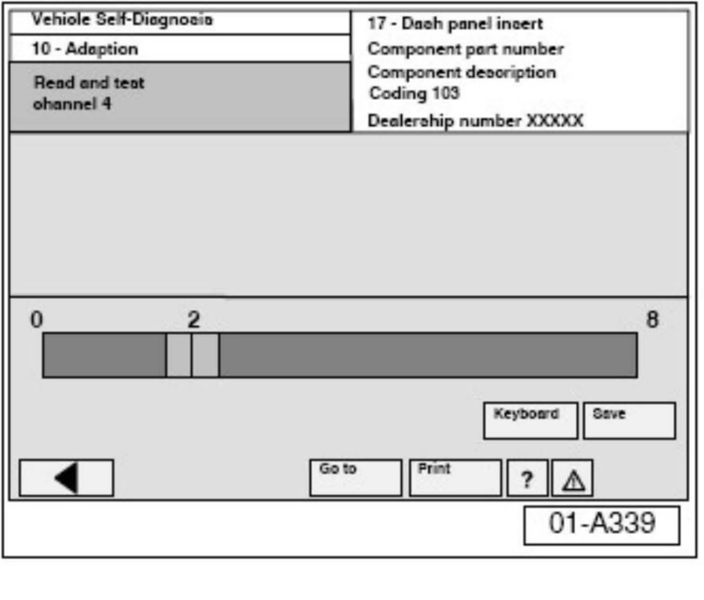
^ Check language settings after update.
Language can be changed in address word "17-Dash panel insert", Diagnosis function "012 - Adaption" Channel 4".
2 = English
3 = French
^ Reconnect two electrical connectors for cooling fans -V7- and -V177-, see Repair Manual, Engine Mechanical, 19-Cooling system.